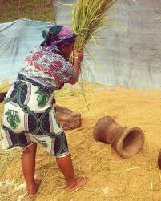

I lived in a small village called Kelilalina.It belongs to district Ifanadina which is a part of Vatovavy Fitovinany Region.I would like to share that it's nice to keep our tradition because we may lose them one day. Here are some traditional life which I found from my town.
This is a small village called Anosy which is one of the small village around our town. It is calm place and it is good for going on holiday. Besides, we have to go by canoe because it is on the side of a famous stream called "Namorona".
This kind of dance is known as "Dombolo" which makes the village special. Everyone has to wear their traditional clothes which made of some leaf called "harefo". We open a party by doing this dance. Actually, there are some teenagers who are already in a team so they have rehearsed for a very long time.
Most people in my town are farmers especially in the small village. This task is only for a women. Sometimes, men can take part in it as well.